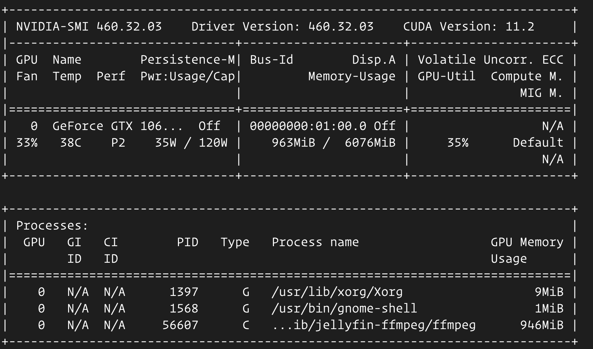

I have an Ubuntu desktop machine with an old Nvidia card. It has OKish specs, but it is a bit noisy for my liking. In short, I’ve made it into a publicly accessible Jellyfin media server with Traefik+Wireguard and moved it to the corner of my place with USB WiFi stick plugged in.
WiFi
You have install kernel drivers for the WiFi stick first, and the drivers are vendor specific.
check available devices
iwconfigwlp4s0 is the device name for my USB WiFi stick.
- bring the device up
sudo ifconfig wlp4s0 up- check available wireless networks
sudo iwlist wlp4s0 scan | grep ESSID- connect to the network
# generate & save password
wpa_passphrase your-ESSID your-wifi-passphrase | sudo tee /etc/wpa_supplicant.conf
# -B is for running things in background
sudo wpa_supplicant -B -c /etc/wpa_supplicant.conf -i wlp4s0
# get an IP address
sudo dhclient wlp4s0- Autoconnect to WiFi after reboot
# crontab for the root
sudo crontabe -u root -e
# content of crontab
# @reboot sleep 5 && /usr/local/bin/wifi.sh 2>&1 >> /var/log/reboot.log#!/bin/bash
# wifi.sh
/usr/sbin/rfkill unblock wifi || true
/sbin/ifconfig wlp4s0 up || true
/sbin/wpa_supplicant -B -c /etc/wpa_supplicant.conf -i wlp4s0 || true
/sbin/dhclient wlp4s0 || trueDisable WiFi power saving
- Disable wifi power management directly by editing
/etc/NetworkManager/conf.d/default-wifi-powersave-on.confand changed the value from 3 to 2, saved changes and reboot.
- Disable wifi power management directly by editing
Performance Tweaks
# To ameliorate the connection through the intel wifi card you can:
# Disable 802.11n
# Enable software encryption
# Enable the transmission antenna aggregation
# Disable bluetooth coexistence
# Create a /etc/modprobe.d/iwlwifi.conf with the following content :
options iwlwifi 11n_disable=1
options iwlwifi swcrypto=1
options iwlwifi 11n_disable=8
options iwlwifi bt_coex_active=0Remote Desktop
I’ve tried lots of things for remote desktop, then settled for Chrome Remote Desktop. Official docs are not so reliable, and this gist did the trick.
Honestly I don’t use this at all, but I think it is nice to have.
{% gist ae09f72bd5badc64d4727a0d38fc590b %} https://gist.github.com/organizm/ae09f72bd5badc64d4727a0d38fc590b
Media Server
- Jellyfin is free & open source, and it is not bloated with ads. Start Jellyfin with Nvidia hardware acceleration enabled(You can check out docs for more). Docker-compose is buggy with GPUs, so I have to use command line for this. You have to install nvidia-docker2 before hand.
docker run -d \
--name=jellyfin \
-e NVIDIA_DRIVER_CAPABILITIES=all \
-e NVIDIA_VISIBLE_DEVICES=all \
--gpus all \
--pid host \
--runtime=nvidia \
-p 8096:8096 \
-p 8920:8920 \
-v /data/jellyfin/config:/config \
-v /data/jellyfin/media:/media \
-v /data/jellyfin/cache:/cache \
--restart unless-stopped \
jellyfin/jellyfin:unstableSince it is sharing(--pid host) PID namespace with host, you can run nvidia-smi on host machine directly to see if Jellyfin is using GPU when transcoding content.

- Register an OpenSubtitles.org account and install the plugin for the Jellyfin. You have to login with your account in the plugin settings page. With this you can add subtitles to your videos without too much effort.
Syncing Remote Folders
rclone is kinda aggressive, so you have to use --max-delete 0 to keep your files intact in your destination.
rclone sync --max-delete 0 -v REMOTE_DRIVE:legal_movies movies --stats 10sInternet Access
The desktop is connected to a VPS instance with WireGuard. WireGuard is pretty easy to setup.
Here is the Traefik configuration on the VPS instance.
A somewhat secure Traefik frontend with automated TLS certificates.
# docker-compose.yaml
version: '3.8'
services:
traefik:
image: traefik:v2.3
restart: always
ports:
- "80:80"
- "443:443"
volumes:
- "/var/log/traefik:/var/log/traefik"
# save certs so that you won't DDOS letencrypt servers after restart
- "$PWD/certs:/letsencrypt"
- "/var/run/docker.sock:/var/run/docker.sock:ro"
- "$PWD/services/traefik/:/etc/traefik/"
labels:
- "traefik.enable=true"
- "traefik.http.routers.dashboard.rule=Host(`DOMAIN_FOR_DASHBOARD`)"
- "traefik.http.routers.dashboard.entrypoints=websecure"
- "traefik.http.routers.dashboard.tls.certresolver=letsencrypt"
- "traefik.http.routers.dashboard.service=api@internal"
### basic auth
- "traefik.http.routers.dashboard.middlewares=auth"
# admin admin; echo $(htpasswd -nb admin admin) | sed -e s/\\$/\\$\\$/g
- "traefik.http.middlewares.auth.basicauth.users=admin:$$apr1$$k.B4XC1H$$s0IZDaqRa4BX0MwcMHXnD/"
### compression
- "traefik.http.middlewares.test-compress.compress=true"
- "traefik.http.middlewares.test-compress.compress.excludedcontenttypes=text/event-stream"
### Security related
- "traefik.http.middlewares.test-security.headers.SSLRedirect=true"
#### Note that this uses SSLHost verbatim, so add the port to SSLHost if you are using an alternate port.
- "traefik.http.middlewares.test-security.headers.SSLForceHost=true"
#### The stsSeconds is the max-age of the Strict-Transport-Security header. If set to 0, would NOT include the header.
- "traefik.http.middlewares.test-security.headers.STSSeconds=315360000"
#### The stsIncludeSubdomains is set to true, the includeSubDomains directive will be
#### appended to the Strict-Transport-Security header.
- "traefik.http.middlewares.test-security.headers.STSIncludeSubdomains=true"
#### Set stsPreload to true to have the preload flag appended to the Strict-Transport-Security header.
- "traefik.http.middlewares.test-security.headers.STSPreload=true"
#### Set forceSTSHeader to true, to add the STS header even when the connection is HTTP.
- "traefik.http.middlewares.test-security.headers.forceSTSHeader=true"
#### Set frameDeny to true to add the X-Frame-Options header with the value of DENY.
- "traefik.http.middlewares.test-security.headers.frameDeny=true"
#### Set contentTypeNosniff to true to add the X-Content-Type-Options header with the value nosniff.
- "traefik.http.middlewares.test-security.headers.contentTypeNosniff=true"
#### Set browserXssFilter to true to add the X-XSS-Protection header with the value 1; mode=block.
- "traefik.http.middlewares.test-security.headers.browserXSSFilter=true"
###
- "traefik.http.middlewares.test-security.headers.contentSecurityPolicy=frame-ancestors 'self';"
- "traefik.http.middlewares.test-security.headers.referrerPolicy=strict-origin"
- "traefik.http.middlewares.test-security.headers.featurePolicy=microphone 'none'; geolocation 'none'"
#services/traefik/traefik.toml
[entryPoints]
[entryPoints.web]
address = ":80"
[entryPoints.web.http]
[entryPoints.web.http.redirections]
[entryPoints.web.http.redirections.entryPoint]
to = "websecure"
scheme = "https"
[entryPoints.websecure]
address = ":443"
[api]
dashboard = true
[accessLog]
filePath = "/var/log/traefik/access.log"
[log]
filePath = "/var/log/traefik/traefik.log"
format = "json"
level = "DEBUG"
[metrics]
[metrics.prometheus]
[providers]
[providers.docker]
exposedByDefault = false
[providers.file]
directory = "/etc/traefik/dynamic/"
[certificatesResolvers.letsencrypt.acme]
# your email address
email = ""
storage = "/letsencrypt/acme.json"
[certificatesResolvers.letsencrypt.acme.httpChallenge]
entryPoint = "web"# services/traefik/dynamic/custom.yml
http:
middlewares:
auth:
basicAuth:
users:
# admin admin; htpasswd -nb admin admin
- "admin:$apr1$2p9L2YyO$6cnp6nqaF6Xgz9qdIGp/z1"
routers:
jellyfin:
middlewares:
# extra basic auth if necessary
- auth
rule: Host(`YOUR_DOMAIN_NAME`)
service: tv
tls:
certresolver: letsencrypt
services:
tv:
loadBalancer:
servers:
# wireguard IP address of media server
- url: http://WIREGUARD_IP_OF_MEDIA_SERVER:8096 After setting this up, you can visit your Jellyfin from anywhere you like.